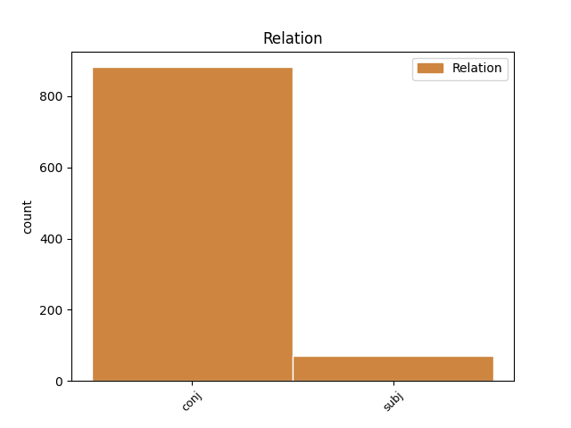
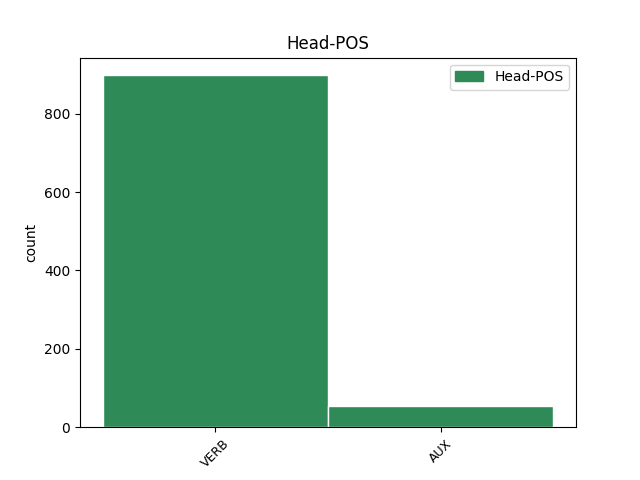
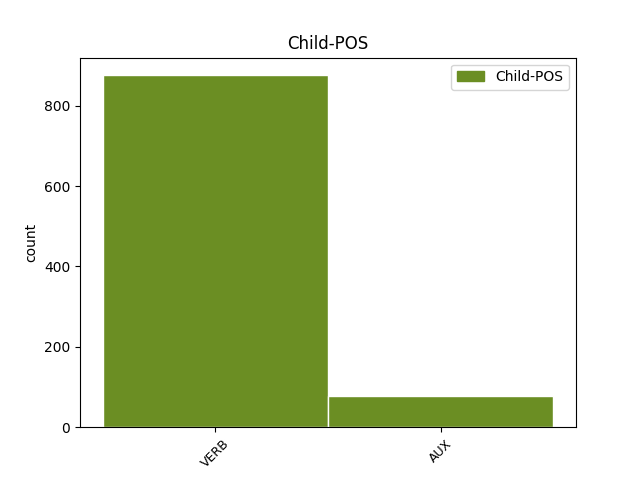

Distribution of features within this leaf



Agreement Rules sorted by frequency.
- When the dependent token is the conjunct(conj) of the head token,
1 guþ _ _ _ _ 0 _ _ _
2 andhaitand and-haitan VERB V- Mood=Ind|Number=Plur|Person=3|Tense=Pres|VerbForm=Fin|Voice=Act 0 _ _ _
3 kunnan _ _ _ _ 0 _ _ _
4 iþ _ _ _ _ 0 _ _ _
5 waurstwam _ _ _ _ 0 _ _ _
6 inwidand in-widan VERB V- Mood=Ind|Number=Plur|Person=3|Tense=Pres|VerbForm=Fin|Voice=Act 2 conj _ ref=TIT_1.16
7 andasetjai _ _ _ _ 0 _ _ _
8 wisandans _ _ _ _ 0 _ _ _
9 jah _ _ _ _ 0 _ _ _
10 ungalaubjandans _ _ _ _ 0 _ _ _
11 jah _ _ _ _ 0 _ _ _
12 du _ _ _ _ 0 _ _ _
13 allamma _ _ _ _ 0 _ _ _
14 waurstwe _ _ _ _ 0 _ _ _
15 godaize _ _ _ _ 0 _ _ _
16 uskusanai _ _ _ _ 0 _ _ _
1 unte _ _ _ _ 0 _ _ _
2 us _ _ _ _ 0 _ _ _
3 þaim _ _ _ _ 0 _ _ _
4 sind wisan AUX V- Mood=Ind|Number=Plur|Person=3|Tense=Pres|VerbForm=Fin|Voice=Act 0 _ _ _
5 þaiei _ _ _ _ 0 _ _ _
6 sliupand sliupan VERB V- Mood=Ind|Number=Plur|Person=3|Tense=Pres|VerbForm=Fin|Voice=Act 4 subj _ ref=2TIM_3.6
7 in _ _ _ _ 0 _ _ _
8 gardins _ _ _ _ 0 _ _ _
9 jah _ _ _ _ 0 _ _ _
10 frahunþana _ _ _ _ 0 _ _ _
11 tiuhand _ _ _ _ 0 _ _ _
12 qineina _ _ _ _ 0 _ _ _
13 afhlaþana _ _ _ _ 0 _ _ _
14 frawaurhtim _ _ _ _ 0 _ _ _
15 þoei _ _ _ _ 0 _ _ _
16 tiuhanda _ _ _ _ 0 _ _ _
17 du _ _ _ _ 0 _ _ _
18 lustum _ _ _ _ 0 _ _ _
19 missaleikaim _ _ _ _ 0 _ _ _
20 sinteino _ _ _ _ 0 _ _ _
21 laisjandona _ _ _ _ 0 _ _ _
22 sik _ _ _ _ 0 _ _ _
23 jan _ _ _ _ 0 _ _ _
24 ni _ _ _ _ 0 _ _ _
25 aiw _ _ _ _ 0 _ _ _
26 ƕanhun _ _ _ _ 0 _ _ _
27 in _ _ _ _ 0 _ _ _
28 ufkunþja _ _ _ _ 0 _ _ _
29 sunjos _ _ _ _ 0 _ _ _
30 qiman _ _ _ _ 0 _ _ _
31 mahteiga _ _ _ _ 0 _ _ _
Disagree Examples:
1 akei _ _ _ _ 0 _ _ _
2 qimands _ _ _ _ 0 _ _ _
3 atlagei at-lagjan VERB V- Mood=Imp|Number=Sing|Person=2|Tense=Pres|VerbForm=Fin|Voice=Act 0 _ _ _
4 handu _ _ _ _ 0 _ _ _
5 þeina _ _ _ _ 0 _ _ _
6 ana _ _ _ _ 0 _ _ _
7 ija _ _ _ _ 0 _ _ _
8 jah _ _ _ _ 0 _ _ _
9 libaiþ liban VERB V- Mood=Ind|Number=Sing|Person=3|Tense=Pres|VerbForm=Fin|Voice=Act 3 conj _ ref=MATT_9.18
1 saei _ _ _ _ 0 _ _ _
2 frijoþ _ _ _ _ 0 _ _ _
3 attan _ _ _ _ 0 _ _ _
4 aiþþau _ _ _ _ 0 _ _ _
5 aiþein _ _ _ _ 0 _ _ _
6 ufar _ _ _ _ 0 _ _ _
7 mik _ _ _ _ 0 _ _ _
8 nist _ _ _ _ 0 _ _ _
9 meina _ _ _ _ 0 _ _ _
10 wairþs _ _ _ _ 0 _ _ _
11 jah _ _ _ _ 0 _ _ _
12 saei _ _ _ _ 0 _ _ _
13 frijoþ _ _ _ _ 0 _ _ _
14 sunu _ _ _ _ 0 _ _ _
15 aiþþau _ _ _ _ 0 _ _ _
16 dauhtar _ _ _ _ 0 _ _ _
17 ufar _ _ _ _ 0 _ _ _
18 mik _ _ _ _ 0 _ _ _
19 nist _ _ _ _ 0 _ _ _
20 meina _ _ _ _ 0 _ _ _
21 wairþs _ _ _ _ 0 _ _ _
22 jah _ _ _ _ 0 _ _ _
23 saei _ _ _ _ 0 _ _ _
24 ni _ _ _ _ 0 _ _ _
25 nimiþ niman VERB V- Mood=Ind|Number=Sing|Person=3|Tense=Pres|VerbForm=Fin|Voice=Act 0 _ _ _
26 galgan _ _ _ _ 0 _ _ _
27 seinana _ _ _ _ 0 _ _ _
28 jah _ _ _ _ 0 _ _ _
29 laistjai laistjan VERB V- Mood=Opt|Number=Sing|Person=3|Tense=Pres|VerbForm=Fin|Voice=Act 25 conj _ ref=MATT_10.38
30 afar _ _ _ _ 0 _ _ _
31 mis _ _ _ _ 0 _ _ _
32 nist _ _ _ _ 0 _ _ _
33 meina _ _ _ _ 0 _ _ _
34 wairþs _ _ _ _ 0 _ _ _
1 þu _ _ _ _ 0 _ _ _
2 u _ _ _ _ 0 _ _ _
3 is wisan AUX V- Mood=Ind|Number=Sing|Person=2|Tense=Pres|VerbForm=Fin|Voice=Act 0 _ _ _
4 sa _ _ _ _ 0 _ _ _
5 qimanda _ _ _ _ 0 _ _ _
6 þau _ _ _ _ 0 _ _ _
7 anþariz _ _ _ _ 0 _ _ _
8 uh _ _ _ _ 0 _ _ _
9 beidaima beidan VERB V- Mood=Opt|Number=Plur|Person=1|Tense=Pres|VerbForm=Fin|Voice=Act 3 conj _ ref=MATT_11.3
1 frauja _ _ _ _ 0 _ _ _
2 ƕan _ _ _ _ 0 _ _ _
3 þuk _ _ _ _ 0 _ _ _
4 seƕum saiƕan VERB V- Mood=Ind|Number=Plur|Person=1|Tense=Past|VerbForm=Fin|Voice=Act 0 _ _ _
5 gredagana _ _ _ _ 0 _ _ _
6 aiþþau _ _ _ _ 0 _ _ _
7 afþaursidana _ _ _ _ 0 _ _ _
8 aiþþau _ _ _ _ 0 _ _ _
9 gast _ _ _ _ 0 _ _ _
10 aiþþau _ _ _ _ 0 _ _ _
11 naqadana _ _ _ _ 0 _ _ _
12 aiþþau _ _ _ _ 0 _ _ _
13 siukana _ _ _ _ 0 _ _ _
14 aiþþau _ _ _ _ 0 _ _ _
15 in _ _ _ _ 0 _ _ _
16 karkarai _ _ _ _ 0 _ _ _
17 jan _ _ _ _ 0 _ _ _
18 ni _ _ _ _ 0 _ _ _
19 andbahtidedeima andbahtjan VERB V- Mood=Opt|Number=Plur|Person=1|Tense=Past|VerbForm=Fin|Voice=Act 4 conj _ ref=MATT_25.44
20 þus _ _ _ _ 0 _ _ _
1 atsteigadau at-steigan VERB V- Mood=Imp|Number=Sing|Person=3|Tense=Pres|VerbForm=Fin|Voice=Act 0 _ _ _
2 nu _ _ _ _ 0 _ _ _
3 af _ _ _ _ 0 _ _ _
4 þamma _ _ _ _ 0 _ _ _
5 galgin _ _ _ _ 0 _ _ _
6 jah _ _ _ _ 0 _ _ _
7 galaubjam ga-laubjan VERB V- Mood=Ind|Number=Plur|Person=1|Tense=Pres|VerbForm=Fin|Voice=Act 1 conj _ ref=MATT_27.42
8 imma _ _ _ _ 0 _ _ _